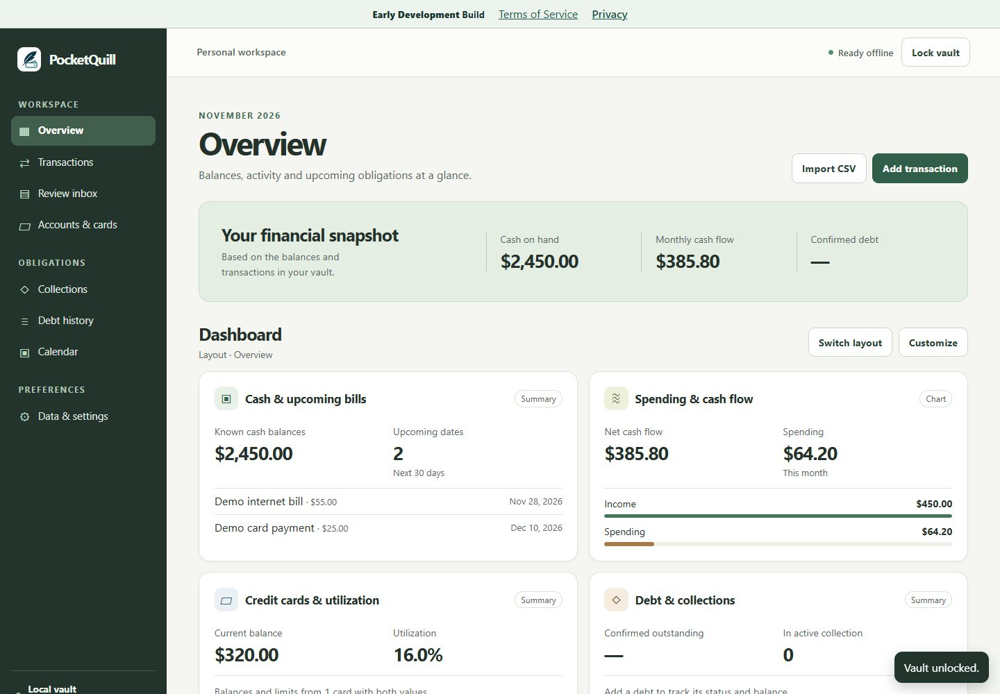
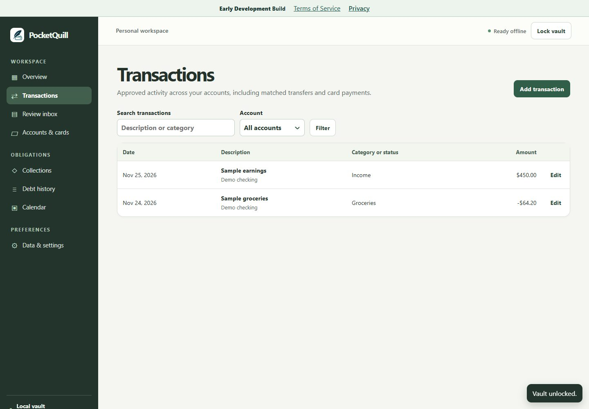
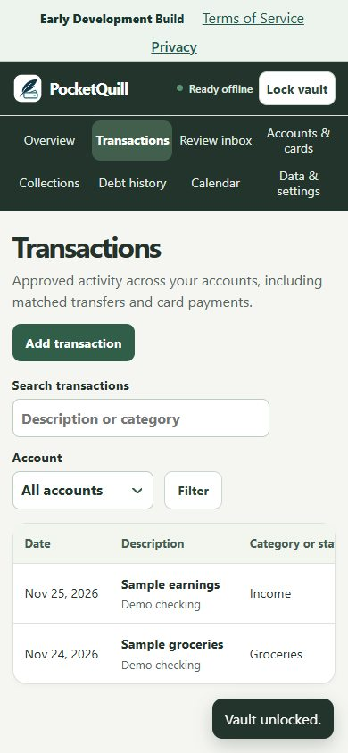

Personal finance
PocketQuill
PocketQuill is a free, offline-capable personal finance web app. Bring in a bank statement, check the transactions, and see how much cash is on hand, which card payment comes next, and what you still owe.

Feature screenshots
Captured from the working app in a local preview with fictional entries only. Phone images are labeled “iPhone viewport preview.” Select an image to view it at full size.






Data guide
Data & backups
- Where records live
- Financial records stay in an encrypted vault in this browser’s IndexedDB database. A passphrase of at least 12 characters protects the vault using AES-256-GCM encryption. Clearing site data can erase the local copy.
- Make a backup
- Download an encrypted vault backup in Data & settings, especially before switching devices. Keep your passphrase separately. PocketQuill has no passphrase recovery service.
- Restore your records
- Choose Restore encrypted backup on the opening screen or in Data & settings. Select the backup and enter the passphrase used to create it. Confirm replacement if this browser already has a vault.
Keep accounts and cards together
- Account balances
- Give checking, savings, cash, credit, and other accounts a nickname. Enter balances yourself and see when each was last updated. Statement imports add activity while the balance stays at the value you entered.
- Credit card details
- Record current and statement balances, credit limit, purchase and promotional APRs, promotion end date, minimum payment, and due date. The app shows utilization when balance and limit are available.
Import and review a statement
- Bank CSV mapping
- Select an account, upload a statement, and match its columns to dates, descriptions, and amounts. The importer supports comma, semicolon, and tab delimiters, several date formats, decimal conventions, reversed signs, and either signed amounts or separate debit and credit columns.
- Reusable import templates
- Save a set of column choices under a name for that bank account. Use the template the next time you bring in a statement in the same format.
- Preview and duplicate checks
- Inspect the import before saving. A stable bank transaction ID helps skip entries already imported and identify conflicting data. Other potential duplicates are flagged for comparison. Invalid rows show a reason.
- Review inbox
- Check incoming transactions, assign categories, and add notes before approving them. For a possible duplicate, compare it with the earlier entry, then dismiss it or approve it as a separate transaction.
- Transfers and card payments
- Match equal and opposite entries on different accounts to mark both sides of one movement. The pair stays out of spending and cash-flow totals. Unmatching sends both entries back to review.
- Manual entries and search
- Add or edit a transaction with its account, date, description, amount, category, and notes. Find approved entries by account or search their description, notes, or category. Add or rename categories in settings.
Track debts and dates
- Collections and debt history
- Keep active collections in their own view and follow other debts through delinquency, charge-off, referral, inactivity, or payoff. Record the original creditor, current owner, collecting agency, balance, last payment, case reference, and deadline.
- Balance certainty
- Mark a balance confirmed, disputed, or unverified. Confirmed outstanding totals leave out paid-off debts. Linking a debt to an existing credit card also keeps it out of the dashboard’s card totals to avoid double-counting.
- Call and legal notes
- Attach dated notes to a debt so conversations and case developments stay with the creditor’s record. Reopen and edit an earlier note when you need to.
- Calendar
- Review a monthly grid and dated list of card due dates, promotional expirations, and active debt deadlines. Add your own dates with an amount or notes, move between months, or return to today.
Read your financial picture
- Cash and upcoming dates
- See the balances you entered for cash, savings, and checking. The cash panel also counts upcoming dates in the next 30 days.
- Monthly cash flow
- Approved transactions supply this month’s income, spending, and net cash flow. Matched transfers and card payments stay out of these figures.
- Credit and debt summaries
- Review combined card balances and utilization, confirmed debt, counts of active collections, and amounts still disputed or unverified. Chart views break out card utilization by account and debts by status.
- Saved dashboard layouts
- Reorder the four panels and choose a chart or summary for each. Name a layout, save a copy, and switch between saved arrangements.
Manage your vault and files
- App CSV import and export
- Exchange the full app’s records in a versioned, readable CSV. A blank template, filled example, and field guide show the format. Preview additions, unchanged rows, rejected rows, and updates before saving. Changing an existing record requires opting in.
- Lock and currency preferences
- Lock the vault yourself or set an inactivity timeout from 1 to 60 minutes. Choose a display currency for the whole vault. The formatting changes while the entered amounts stay the same.
- Offline use and updates
- Once offline setup is ready, reopen the app without a connection. A status indicator reports availability, and you can apply a waiting app update from the interface.